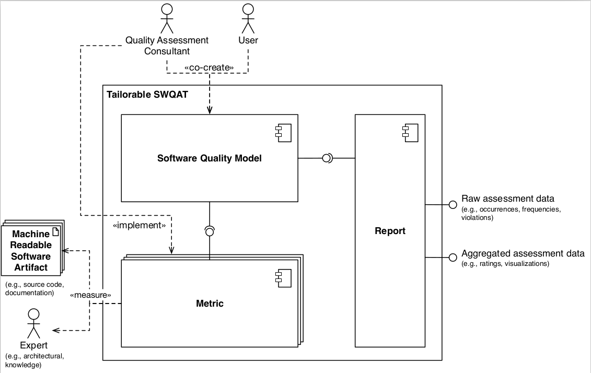

class: center, middle <img src="https://www.saa-authors.eu/picture/739/ftw_768/saa-mtcwmza4nzq5mq.jpg" width=40%/> # DevOps, Software Evolution and Software Maintenance Helge Pfeiffer, Assistant Professor,<br> [Research Center for Government IT](https://www.itu.dk/forskning/institutter/institut-for-datalogi/forskningscenter-for-offentlig-it),<br> [IT University of Copenhagen, Denmark](https://www.itu.dk)<br> `ropf@itu.dk` --- class: center, middle # Evaluation --- ### Evaluation - The most mentioned negative issues 1. High workload in terms of contents 2. Too high pace of the course 3. Late lectures and exercises --- ### ITU-wide Evaluation Please participate in the ITU-wide evaluation on LearnIT. Two years ago, the response rate for this course on LearnIT was 0%, which is unpractical since ITUs management mainly looks at these evaluation results: * BSc: https://learnit.itu.dk/mod/questionnaire/view.php?id=181135 * MSc: https://learnit.itu.dk/mod/questionnaire/view.php?id=181137 --- class: center, middle # Exam Preparation --- ### Exam Preparation * You can find a bit deeper description of the exam and how it is conducted [here](https://github.com/itu-devops/lecture_notes/blob/master/exam_details.md). * See exam description on LearnIT ([BSc](https://learnit.itu.dk/local/coursebase/view.php?ciid=1137)/[MSc](https://learnit.itu.dk/local/coursebase/view.php?ciid=1139)) under section _Ordinary exam_ * The course and exam are based on your project. However, the entire curriculum is relevant for the exam. -- * Please let us know in good time before the exam if you have any special conditions that lead to that you have longer exam times so that we can schedule accordingly. --- #### "I want to have the exam on day ..." * We cannot promise that the exams can be scheduled so that everybody is 100% happy with its placement. * But you can help us scheduling by indicating your preferred days and days you would like to avoid in the [shared spreadsheet](https://ituniversity.sharepoint.com/:x:/r/sites/2023DevOpsSoftwareEvolutionandSoftwareMaintenance/Shared%20Documents/General/exam_preferences.xlsx?d=w8c68b8f107ea47428d8f4681cd3e011d&csf=1&web=1&e=XGSk1A). * Once we have feedback from all of you, I will share an exam plan in our Git repository. Important, when editing the spreadsheet, please make sure that the number of group members is still correct. If not please update it and inform us about it (by sending a pull request to the README.adoc file). --- class: center, middle # [Why do all good things come to an end?](https://youtu.be/4pBo-GL9SRg?t=41) --- ### The Simulator stops now! ```bash pkill -f minitwit_simulator ``` --- ### Lean back, relax a bit, and be proud of yourselves <img src="https://media.tenor.com/XzBBjLOUkFwAAAAC/thumbs-up-okay.gif" width="50%"> <img src="https://i.gifer.com/OfL.gif" width="50%"> --- ### Release Activity <object width="100%" data="http://138.197.185.85/release_activity_weekly.svg"></object> --- ### Weekly Commit Activity <object width="100%" data="http://138.197.185.85/commit_activity_weekly.svg"></object> --- ### Daily Commit Activity <object width="100%" data="http://138.197.185.85/commit_activity_daily.svg"></object> --- ### Latest processed events <object width="100%" data="http://104.248.134.203/chart.svg"></object> --- class: center, middle # Work with us?! <img src="images/COLOURBOX46306564.jpg" width="90%"> --- ### Teaching Assistants for this course in 2024 From earlier evaluations: > * Great TA's! They were helpful many times for answering questions. > * [...] TAs are really good at presenting relevant stuff [...]! --- ### Teaching Assistants for this course in 2024 Typical Tasks: * Operate the Simulator * Talk to and help student groups * Implement improvements in the teaching material and/or the course's technical infrastructure * Interact with Mircea and Helge to point out recurring issues and problems from student groups --- #### Teaching Assistant for BDSA Fall 2023 In case you would like to become TA for BDSA in fall, please apply via the official [application page](https://candidate.hr-manager.net/ApplicationInit.aspx?cid=119&ProjectId=181565&DepartmentId=3439&MediaId=5) Will be a course with focus on a project, a Twitter-clone in C#/.Net called Chirp. Tasks: * Help prepare lecture and preparation material * Providing feedback and guidance to student groups * 15ECTS course, i.e., many paid hours of work 😀 --- class: center, middle # Thesis/Project Topics --- ### Mircea - [Project ideas](https://github.com/mircealungu/student-projects/) --- ### Helge --- #### What I do not want to supervise as projects next year * _"We want to do something with Kubernetes"_ * _"We want to implement a certain DevOps CI pipeline"_ * In essence, theses related to the topics of this course 😀 - Only exception, in case you are working with a company and you plan to evaluate and measure quality in-/decrease by working in a certain way. -- #### What I would like to supervise * Projects on software quality, software quality assessments * Tools implementing software quality metrics * Mining (VCS, issue trackers, etc.) studies * Group projects (3 to 4 students) * Importantly, you are **motivated** --- #### Maintainability of an Internal Software Prodcut @Novo Nordisk We are in contact with Novo Nordisk who would like to assess, improve, and increase maintainability of one of their internal products. Come and talk to me about the project. --- #### Implement _Implement Group_'s quality assessment metrics into a tool A group of students that took this class last year is currently [implementing](https://github.com/parameterIT/tool) and evaluating a tailorable software quality assessment tool as their BSc thesis.  After hearing Lars last week and how they assess software quality, a project would be to takeover the tool from the current group, implement the quality assessment rules that Lars described in his presentation, and to evaluate together with the consultants if such a tool could help them in their work. --- #### DaSEA – A Dataset for Software Ecosystem Analysis (BSc/MSc) <img src="images/graph.svg" width="80%"> --- #### DaSEA – A Dataset for Software Ecosystem Analysis (BSc/MSc) <img src="images/graph.svg" width="20%"> The [DaSEA](https://github.com/DaSEA-project/DASEA) project was born out of the research project and MSc of three students that took this course two years ago. Find a deeper [description of the dataset in the paper](https://itu.dk/~ropf/blog/assets/msr2022.pdf) and a high-level introduction in [the presentation](https://mybinder.org/v2/gh/DaSEA-project/MSR22-DaSEA-Dataset-Presentation/main?filepath=index.ipynb) and the [presentation video](https://itu.dk/~ropf/presentations/msr2022.html). Possible projects: - Add more miners, especially for other operating systems (APT, Gentoo's portage, RPM, ...) - Improve long-running miners of large ecosystems like Maven (Maven Central), .Net (NuGet), etc. - Improve operating system miners how to automatically update host version and mined package versions? - Execute studies with the dataset --- #### Automatic Inference and Visualization of component boundaries <img src="https://upload.wikimedia.org/wikipedia/commons/thumb/f/f3/Haiku_%28operating_system%29_logo.svg/2560px-Haiku_%28operating_system%29_logo.svg.png" width="30%" > Apply static analysis of C/C++ source code to infer and visualize component boundaries of software. Component boundaries should be identified via function/method calls. Possible projects: - Execute a case study with the [Haiku operating system](https://www.haiku-os.org) and [FreeBSD](https://www.freebsd.org/) where you try to automatically identify the kernels of the operating systems and suggest possible ways of "cutting" out the Haiku kernel to replace it with the FreeBSD kernel. - Visualize Haiku's architecture - Identify dead code in Haiku's sources --- #### The Human Side of Code (BSc/MSc) <img src="https://github.com/itu-devops/lecture_notes/raw/0891bdc8b41a756eac04744e2168ec7c09f4f36b/sessions/session_02/images/deps.png" width="80%"> --- #### The Human Side of Code (BSc/MSc) <img src="https://github.com/itu-devops/lecture_notes/raw/0891bdc8b41a756eac04744e2168ec7c09f4f36b/sessions/session_02/images/deps.png" width="20%"> Combine static analysis (likely `git blame`) of a **complete** software system with dynamic analysis (using profilers and tracing) to identify for each executed line of source code the influence of the respective authors. Can one identify for every line of source code written in interpreted and compiled languages like Python, C/C++, etc. which line written by which author is actually executed? How would a prototype of such a system look like and what is the lowest level in stack that one could trace? Execute a case study and evaluate a prototype. --- <img src="https://media.tenor.com/6o3ypx4XcSYAAAAd/fin-the-end.gif" width="100%"> <!-- #### Implement and Evaluate Criticality Score (BSc/MSc) Recently, Google's Open Source team presented the [criticality score](https://github.com/ossf/criticality_score/blob/a02c8311fbbbd5d569ebaad3106ec08532b3a10c/Quantifying_criticality_algorithm.pdf), a metric to assess [_"influence and importance"_](https://github.com/ossf/criticality_score/blob/4a3e3e171ac403344060dbcfc43f47944afe77d0/README.md) of a project in an ecosystem from project specific signals, e.g., number of dependents, commit frequency, etc. The project's authors [would like to include a centrality metric in computation of their metric](https://github.com/ossf/criticality_score/issues/53#issuecomment-748556336), which is difficult for systems programming language ecosystems like C/C++. Using the [DaSEA dataset](http://dasea.org), one could compute ecosystem specific and global centrality ranks and include them in the metric. Find a more detailed [problem description in this paper](https://itu.dk/~ropf/blog/assets/msr2021_pfeiffer.pdf).  -->